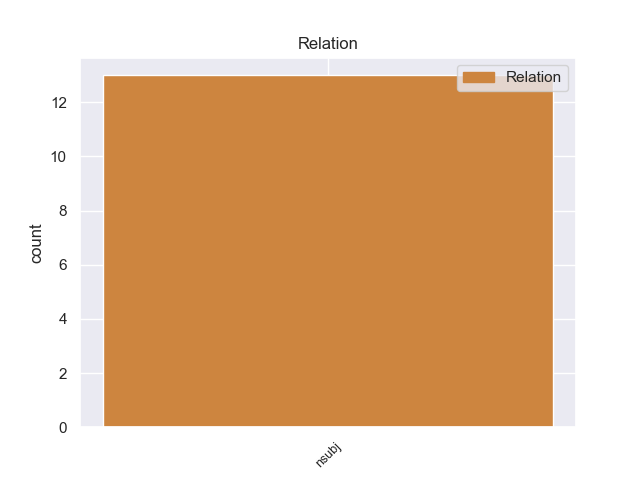
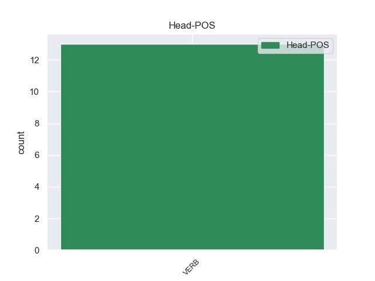
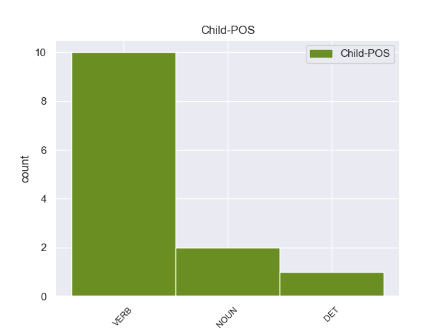

Distribution of features within this leaf



Agreement Rules sorted by frequency.
- When the dependent token is the nominal subject(nsubj) of the head token, and the dependent token is VERB.
1 Κύριε _ _ _ _ 0 _ _ _
2 Πρόεδρε πρόεδρε VERB _ Aspect=Imp|Mood=Ind|Number=Sing|Person=1|Tense=Pres|VerbForm=Fin|Voice=Act 5 nsubj _ _
3 , _ _ _ _ 0 _ _ _
4 σας _ _ _ _ 0 _ _ _
5 είμαι είμαι VERB _ Aspect=Imp|Mood=Ind|Number=Sing|Person=1|Tense=Pres|VerbForm=Fin|Voice=Act 0 _ _ _
6 εξαιρετικά _ _ _ _ 0 _ _ _
7 ευγνώμων _ _ _ _ 0 _ _ _
8 για _ _ _ _ 0 _ _ _
9 το _ _ _ _ 0 _ _ _
10 ότι _ _ _ _ 0 _ _ _
11 ταχθήκατε _ _ _ _ 0 _ _ _
12 υπέρ _ _ _ _ 0 _ _ _
13 της _ _ _ _ 0 _ _ _
14 πρότασης _ _ _ _ 0 _ _ _
15 να _ _ _ _ 0 _ _ _
16 προσκαλέσουμε _ _ _ _ 0 _ _ _
17 σ _ _ _ _ 0 _ _ _
18 το _ _ _ _ 0 _ _ _
19 Ευρωπαϊκό _ _ _ _ 0 _ _ _
20 Κοινοβούλιο _ _ _ _ 0 _ _ _
21 , _ _ _ _ 0 _ _ _
22 σ _ _ _ _ 0 _ _ _
23 τις _ _ _ _ 0 _ _ _
24 Ομάδες _ _ _ _ 0 _ _ _
25 μας _ _ _ _ 0 _ _ _
26 , _ _ _ _ 0 _ _ _
27 παρατηρητές _ _ _ _ 0 _ _ _
28 από _ _ _ _ 0 _ _ _
29 τις _ _ _ _ 0 _ _ _
30 υποψήφιες _ _ _ _ 0 _ _ _
31 για _ _ _ _ 0 _ _ _
32 ένταξη _ _ _ _ 0 _ _ _
33 χώρες _ _ _ _ 0 _ _ _
34 μετά _ _ _ _ 0 _ _ _
35 από _ _ _ _ 0 _ _ _
36 την _ _ _ _ 0 _ _ _
37 υπογραφή _ _ _ _ 0 _ _ _
38 των _ _ _ _ 0 _ _ _
39 συνθηκών _ _ _ _ 0 _ _ _
40 . _ _ _ _ 0 _ _ _
1 Οι _ _ _ _ 0 _ _ _
2 πατατοπαραγωγοί _ _ _ _ 0 _ _ _
3 θα _ _ _ _ 0 _ _ _
4 συνεχίσουν _ _ _ _ 0 _ _ _
5 την _ _ _ _ 0 _ _ _
6 απευθείας _ _ _ _ 0 _ _ _
7 διάθεση _ _ _ _ 0 _ _ _
8 του _ _ _ _ 0 _ _ _
9 προϊόντος _ _ _ _ 0 _ _ _
10 τους _ _ _ _ 0 _ _ _
11 σ _ _ _ _ 0 _ _ _
12 τους _ _ _ _ 0 _ _ _
13 καταναλωτές _ _ _ _ 0 _ _ _
14 , _ _ _ _ 0 _ _ _
15 μιας _ _ _ _ 0 _ _ _
16 και _ _ _ _ 0 _ _ _
17 κάτι κάτι DET _ Case=Acc|Gender=Neut|Number=Sing|Person=3|PronType=Ind 20 nsubj _ _
18 τέτοιο _ _ _ _ 0 _ _ _
19 τους _ _ _ _ 0 _ _ _
20 εξασφαλίζει εξασφαλίζει VERB _ Aspect=Imp|Mood=Ind|Number=Sing|Person=3|Tense=Pres|VerbForm=Fin|Voice=Act 0 _ _ _
21 μια _ _ _ _ 0 _ _ _
22 σειρά _ _ _ _ 0 _ _ _
23 από _ _ _ _ 0 _ _ _
24 πλεονεκτήματα _ _ _ _ 0 _ _ _
25 . _ _ _ _ 0 _ _ _
1 Κυρία _ _ _ _ 0 _ _ _
2 Αντιπρόεδρε αντιπρόεδρε NOUN _ Aspect=Perf|Mood=Ind|Number=Sing|Person=3|Tense=Past|VerbForm=Fin|Voice=Act 8 nsubj _ _
3 Loyola _ _ _ _ 0 _ _ _
4 de _ _ _ _ 0 _ _ _
5 Palacio _ _ _ _ 0 _ _ _
6 , _ _ _ _ 0 _ _ _
7 σας _ _ _ _ 0 _ _ _
8 ενθαρρύνουμε ενθαρρύνουμε VERB _ Aspect=Imp|Mood=Ind|Number=Sing|Person=3|Tense=Pres|VerbForm=Fin|Voice=Act 0 _ _ _
9 να _ _ _ _ 0 _ _ _
10 συνεχίσετε _ _ _ _ 0 _ _ _
11 με _ _ _ _ 0 _ _ _
12 αποφασιστικότητα _ _ _ _ 0 _ _ _
13 τον _ _ _ _ 0 _ _ _
14 δρόμο _ _ _ _ 0 _ _ _
15 σας _ _ _ _ 0 _ _ _
16 ! _ _ _ _ 0 _ _ _
Disagree Examples:
1 Κυρία _ _ _ _ 0 _ _ _
2 Πρόεδρε πρόεδρε VERB _ Aspect=Perf|Mood=Ind|Number=Sing|Person=3|Tense=Past|VerbForm=Fin|Voice=Act 4 nsubj _ _
3 , _ _ _ _ 0 _ _ _
4 καλωσορίζουμε καλωσορίζουμε VERB _ Aspect=Perf|Mood=Ind|Number=Plur|Person=1|VerbForm=Fin|Voice=Act 0 _ _ _
5 αυτή _ _ _ _ 0 _ _ _
6 την _ _ _ _ 0 _ _ _
7 πρωτοβουλία _ _ _ _ 0 _ _ _
8 ως _ _ _ _ 0 _ _ _
9 ένα _ _ _ _ 0 _ _ _
10 ακόμα _ _ _ _ 0 _ _ _
11 μικρό _ _ _ _ 0 _ _ _
12 βήμα _ _ _ _ 0 _ _ _
13 σ _ _ _ _ 0 _ _ _
14 την _ _ _ _ 0 _ _ _
15 πορεία _ _ _ _ 0 _ _ _
16 προς _ _ _ _ 0 _ _ _
17 την _ _ _ _ 0 _ _ _
18 εκπλήρωση _ _ _ _ 0 _ _ _
19 της _ _ _ _ 0 _ _ _
20 εντολής _ _ _ _ 0 _ _ _
21 που _ _ _ _ 0 _ _ _
22 λάβαμε _ _ _ _ 0 _ _ _
23 σ _ _ _ _ 0 _ _ _
24 τη _ _ _ _ 0 _ _ _
25 Σύνοδο _ _ _ _ 0 _ _ _
26 του _ _ _ _ 0 _ _ _
27 Τάμπερε _ _ _ _ 0 _ _ _
28 να _ _ _ _ 0 _ _ _
29 καταστήσουμε _ _ _ _ 0 _ _ _
30 την _ _ _ _ 0 _ _ _
31 αρχή _ _ _ _ 0 _ _ _
32 της _ _ _ _ 0 _ _ _
33 αμοιβαίας _ _ _ _ 0 _ _ _
34 αναγνώρισης _ _ _ _ 0 _ _ _
35 ακρογωνιαίο _ _ _ _ 0 _ _ _
36 λίθο _ _ _ _ 0 _ _ _
37 της _ _ _ _ 0 _ _ _
38 δικαστικής _ _ _ _ 0 _ _ _
39 συνεργασίας _ _ _ _ 0 _ _ _
40 . _ _ _ _ 0 _ _ _
1 Κύριε κύριε NOUN _ Aspect=Imp|Mood=Ind|Number=Sing|Person=1|Tense=Pres|VerbForm=Fin|Voice=Act 2 nsubj _ _
2 Πρόεδρε πρόεδρε VERB _ Aspect=Perf|Mood=Ind|Number=Sing|Person=3|Tense=Past|VerbForm=Fin|Voice=Act 0 _ _ _
3 , _ _ _ _ 0 _ _ _
4 σ _ _ _ _ 0 _ _ _
5 την _ _ _ _ 0 _ _ _
6 έκθεση _ _ _ _ 0 _ _ _
7 σχετικά _ _ _ _ 0 _ _ _
8 με _ _ _ _ 0 _ _ _
9 την _ _ _ _ 0 _ _ _
10 εαρινή _ _ _ _ 0 _ _ _
11 Σύνοδο _ _ _ _ 0 _ _ _
12 Κορυφής _ _ _ _ 0 _ _ _
13 του _ _ _ _ 0 _ _ _
14 2002 _ _ _ _ 0 _ _ _
15 , _ _ _ _ 0 _ _ _
16 η _ _ _ _ 0 _ _ _
17 Επιτροπή _ _ _ _ 0 _ _ _
18 Απασχόλησης _ _ _ _ 0 _ _ _
19 και _ _ _ _ 0 _ _ _
20 Κοινωνικών _ _ _ _ 0 _ _ _
21 Υποθέσεων _ _ _ _ 0 _ _ _
22 καθώς _ _ _ _ 0 _ _ _
23 και _ _ _ _ 0 _ _ _
24 η _ _ _ _ 0 _ _ _
25 Επιτροπή _ _ _ _ 0 _ _ _
26 Οικονομικής _ _ _ _ 0 _ _ _
27 και _ _ _ _ 0 _ _ _
28 Νομισματικής _ _ _ _ 0 _ _ _
29 Πολιτικής _ _ _ _ 0 _ _ _
30 επιχείρησαν _ _ _ _ 0 _ _ _
31 να _ _ _ _ 0 _ _ _
32 καταδείξουν _ _ _ _ 0 _ _ _
33 καινοτόμες _ _ _ _ 0 _ _ _
34 κατευθύνσεις _ _ _ _ 0 _ _ _
35 . _ _ _ _ 0 _ _ _
1 Εργαζόμενοι εργαζόμενοι VERB _ Aspect=Imp|Mood=Ind|Number=Sing|Person=1|Tense=Pres|VerbForm=Fin|Voice=Act 5 nsubj _ _
2 σε _ _ _ _ 0 _ _ _
3 ανθρωπιστικές _ _ _ _ 0 _ _ _
4 αποστολές _ _ _ _ 0 _ _ _
5 περιμένουν περιμένουν VERB _ Aspect=Imp|Mood=Ind|Number=Sing|Person=3|Tense=Pres|VerbForm=Fin|Voice=Act 0 _ _ _
6 από _ _ _ _ 0 _ _ _
7 την _ _ _ _ 0 _ _ _
8 Παρασκευή _ _ _ _ 0 _ _ _
9 να _ _ _ _ 0 _ _ _
10 στείλουν _ _ _ _ 0 _ _ _
11 προμήθειες _ _ _ _ 0 _ _ _
12 σ _ _ _ _ 0 _ _ _
13 τη _ _ _ _ 0 _ _ _
14 Μπάμπα _ _ _ _ 0 _ _ _
15 Αμρ _ _ _ _ 0 _ _ _
16 , _ _ _ _ 0 _ _ _
17 αλλά _ _ _ _ 0 _ _ _
18 οι _ _ _ _ 0 _ _ _
19 Συριακές _ _ _ _ 0 _ _ _
20 Αρχές _ _ _ _ 0 _ _ _
21 δεν _ _ _ _ 0 _ _ _
22 τους _ _ _ _ 0 _ _ _
23 επιτρέπουν _ _ _ _ 0 _ _ _
24 την _ _ _ _ 0 _ _ _
25 είσοδο _ _ _ _ 0 _ _ _
26 σ _ _ _ _ 0 _ _ _
27 την _ _ _ _ 0 _ _ _
28 πόλη _ _ _ _ 0 _ _ _
29 , _ _ _ _ 0 _ _ _
30 επικαλούμενες _ _ _ _ 0 _ _ _
31 προβλήματα _ _ _ _ 0 _ _ _
32 ασφάλειας _ _ _ _ 0 _ _ _
33 . _ _ _ _ 0 _ _ _
1 Κύριε _ _ _ _ 0 _ _ _
2 Πρόεδρε πρόεδρε VERB _ Aspect=Imp|Mood=Ind|Number=Sing|Person=1|Tense=Pres|VerbForm=Fin|Voice=Act 6 nsubj _ _
3 , _ _ _ _ 0 _ _ _
4 καταρχάς _ _ _ _ 0 _ _ _
5 θα _ _ _ _ 0 _ _ _
6 ήθελα ήθελα VERB _ Aspect=Imp|Mood=Ind|Number=Sing|Person=3|Tense=Pres|VerbForm=Fin|Voice=Act 0 _ _ _
7 να _ _ _ _ 0 _ _ _
8 συγχαρώ _ _ _ _ 0 _ _ _
9 τους _ _ _ _ 0 _ _ _
10 τρεις _ _ _ _ 0 _ _ _
11 εισηγητές _ _ _ _ 0 _ _ _
12 - _ _ _ _ 0 _ _ _
13 τον _ _ _ _ 0 _ _ _
14 κ. _ _ _ _ 0 _ _ _
15 Χατζηδάκη _ _ _ _ 0 _ _ _
16 , _ _ _ _ 0 _ _ _
17 τον _ _ _ _ 0 _ _ _
18 κ. _ _ _ _ 0 _ _ _
19 van _ _ _ _ 0 _ _ _
20 Dam _ _ _ _ 0 _ _ _
21 και _ _ _ _ 0 _ _ _
22 τον _ _ _ _ 0 _ _ _
23 κ. _ _ _ _ 0 _ _ _
24 Grosch _ _ _ _ 0 _ _ _
25 - _ _ _ _ 0 _ _ _
26 για _ _ _ _ 0 _ _ _
27 το _ _ _ _ 0 _ _ _
28 έργο _ _ _ _ 0 _ _ _
29 τους _ _ _ _ 0 _ _ _
30 . _ _ _ _ 0 _ _ _
1 Κύριε _ _ _ _ 0 _ _ _
2 Πρόεδρε πρόεδρε VERB _ Aspect=Imp|Mood=Ind|Number=Sing|Person=1|Tense=Pres|VerbForm=Fin|Voice=Act 13 nsubj _ _
3 , _ _ _ _ 0 _ _ _
4 η _ _ _ _ 0 _ _ _
5 πρόταση _ _ _ _ 0 _ _ _
6 κανονισμού _ _ _ _ 0 _ _ _
7 σχετικά _ _ _ _ 0 _ _ _
8 με _ _ _ _ 0 _ _ _
9 τη _ _ _ _ 0 _ _ _
10 θέσπιση _ _ _ _ 0 _ _ _
11 βεβαίωσης _ _ _ _ 0 _ _ _
12 οδηγού _ _ _ _ 0 _ _ _
13 προβλέπει προβλέπει VERB _ Aspect=Imp|Mood=Ind|Number=Sing|Person=3|Tense=Pres|VerbForm=Fin|Voice=Act 0 _ _ _
14 να _ _ _ _ 0 _ _ _
15 φέρουν _ _ _ _ 0 _ _ _
16 όλοι _ _ _ _ 0 _ _ _
17 οι _ _ _ _ 0 _ _ _
18 οδηγοί _ _ _ _ 0 _ _ _
19 που _ _ _ _ 0 _ _ _
20 εργάζονται _ _ _ _ 0 _ _ _
21 σε _ _ _ _ 0 _ _ _
22 επιχειρήσεις _ _ _ _ 0 _ _ _
23 μεταφορών _ _ _ _ 0 _ _ _
24 εντός _ _ _ _ 0 _ _ _
25 της _ _ _ _ 0 _ _ _
26 Ευρωπαϊκής _ _ _ _ 0 _ _ _
27 Ένωσης _ _ _ _ 0 _ _ _
28 ένα _ _ _ _ 0 _ _ _
29 ενιαίο _ _ _ _ 0 _ _ _
30 έγγραφο _ _ _ _ 0 _ _ _
31 . _ _ _ _ 0 _ _ _